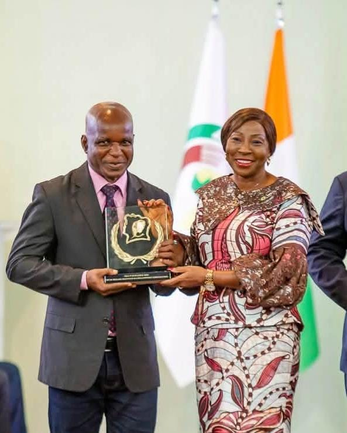
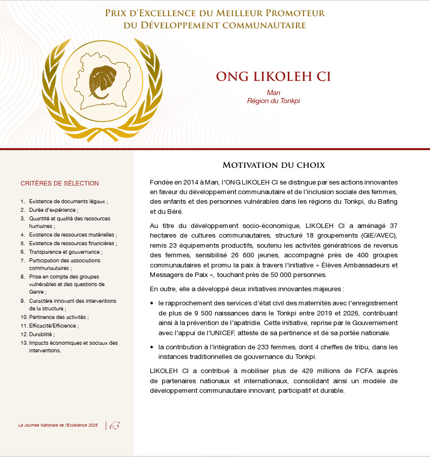
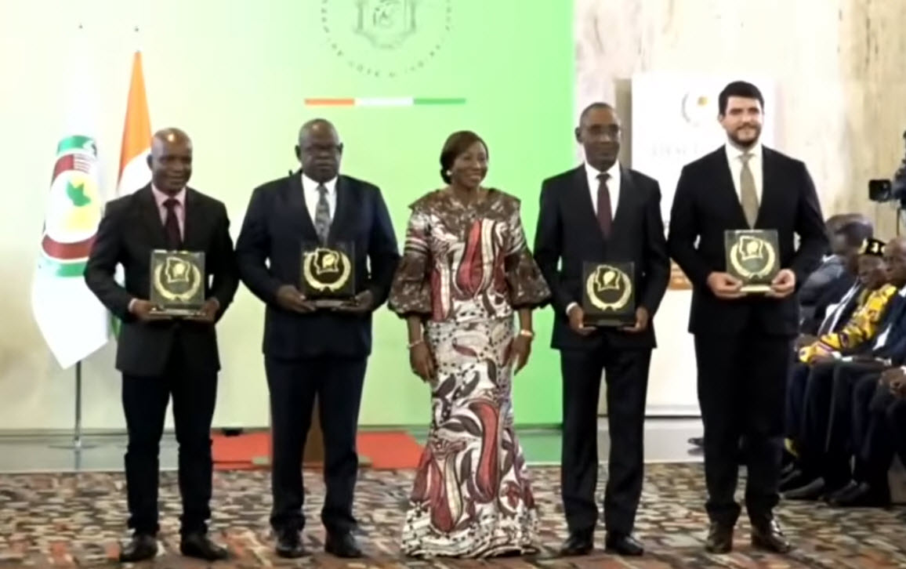
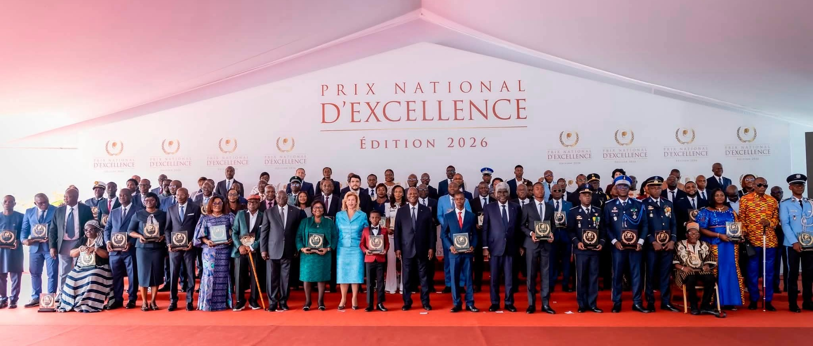

National Excellence Award 2026
Prix d’Excellence du Meilleur Promoteur du Développement Communautaire
ONG LIKOLEH CI received Côte d’Ivoire’s 2026 national distinction for community development, recognising its work with women, children and vulnerable people in Tonkpi, Bafing and Béré.
View the Projects Timeline
Official ceremony
Watch the award moment
This excerpt from the official ceremony shows the presentation of the award to LIKOLEH CI.
LIKOLEH segment: 54:30–55:52.
Watch the full official ceremony on YouTube
Open the brochure page at full size
Official brochure · Page 63
Why LIKOLEH CI was selected
The brochure is originally in French. The text shown here is an English translation.
Founded in Man in 2014, LIKOLEH CI is recognised for innovative action supporting community development and the social inclusion of women, children and vulnerable people in Tonkpi, Bafing and Béré.
Its socio-economic work includes community farming, support for local groups and women’s income-generating activities, youth outreach and peacebuilding through the Students Ambassadors and Messengers of Peace initiative.
The brochure also highlights birth registration near maternity services, women’s participation in traditional governance and the mobilisation of national and international funding for a participatory and sustainable model of community development.
Impact cited in the brochure
Community development in figures
The official brochure cites the following results as part of the motivation for the award.
Ceremony
A national recognition
Moments from the official National Excellence Award ceremony.

